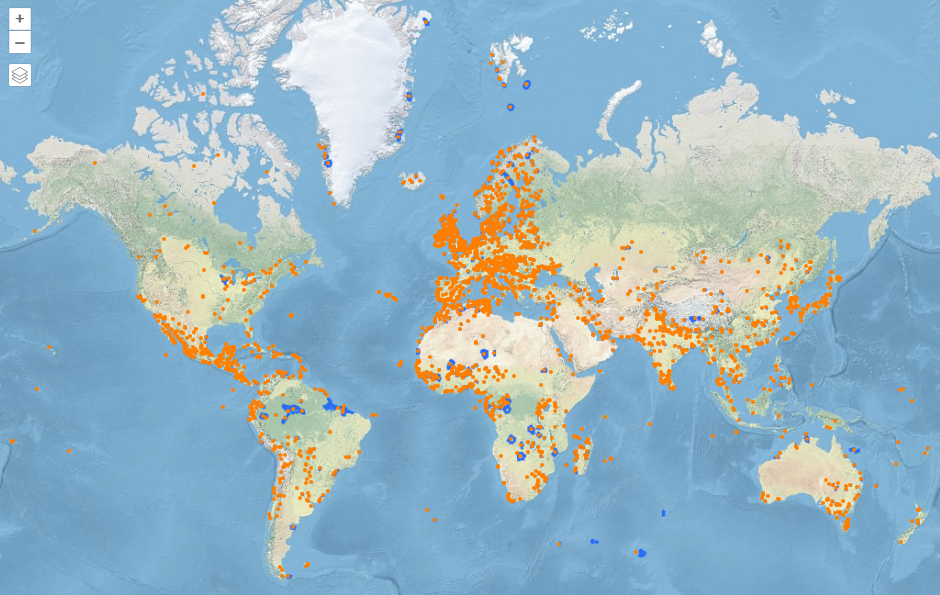
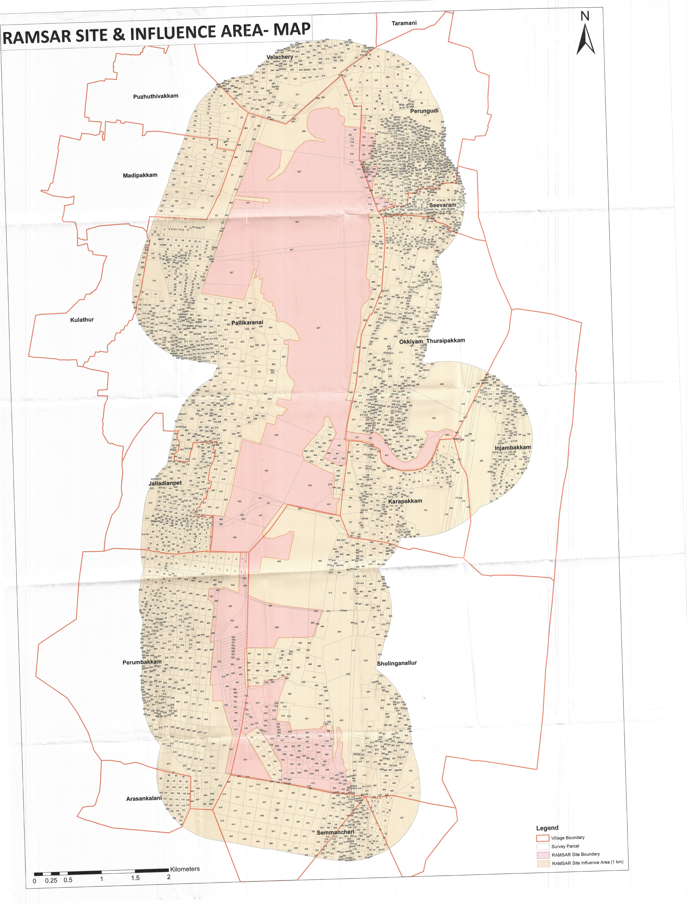

What Pallikaranai Marsh is, and why it matters
Pallikaranai Marsh is one of the last large natural wetlands in Chennai. It sits at the low end of a wide catchment in south Chennai, so rainwater from surrounding neighbourhoods drains into it through a network of lakes, channels and drains before reaching the sea. That role — holding floodwater, recharging groundwater and supporting a large bird population — is why the marsh and the land that drains into it are regulated.
For property, the practical point is simple: anything that blocks or diverts the channels feeding or draining the marsh can worsen flooding nearby, and the authorities now assess land around the marsh with that in mind.
The Ramsar designation
The Ramsar Convention (1971) is an international treaty for the conservation and wise use of wetlands. Pallikaranai Marsh Reserve Forest was designated a Ramsar Site — a Wetland of International Importance — on 8 April 2022, as Ramsar Site No. 2481. The Tamil Nadu State Wetlands Authority records its area as 1,247.54 hectares.
Ramsar status does not by itself ban construction near a wetland. Restrictions come from national rules (the Wetlands (Conservation and Management) Rules, 2017), from planning authorities, and from court and tribunal orders — which is what applies here.

Three boundaries that are often confused
Wetland boundary
The designated wetland itself — about 1,247.5 ha for the Ramsar site. Parcel-level confirmation needs the official boundary and revenue records.
1 km zone
A general distance recommended in a draft management plan and referred to in the NGT judgment; CMDA's October 2025 office order is reported to use it to pause approvals. The NGT judgment records the Wetlands Authority's view that the real zone is site-specific.
Zone of Influence
The land whose drainage actually affects the wetland, to be drawn from hydrology, levels and channels. It can be wide in some places and zero in others. The final zone has not yet been notified.
Official records for the Ramsar site are on the Ramsar Sites Information Service (Site 2481) (opens in a new tab) and the Tamil Nadu State Wetlands Authority site page (opens in a new tab), which links the site's information sheet and the Authority's GIS viewer. We could not find an official published map of the 1 km zone or of the proposed interim Zone of Influence; the diagram below explains the concepts only.

The NGT proceedings and CMDA's order
The National Green Tribunal (Southern Zone) took up the matter on its own motion after a New Indian Express report of 30 June 2023 about a road being laid inside the marsh at Perumbakkam (O.A. No. 91 of 2023). In its judgment of 24 September 2025 it directed that, until the Integrated Management Plan is completed, the authorities should not grant approvals that may alter the character of the marshland, and that CMDA may approve development in the marshland and its zone of influence only after the plan is prepared from the Wetlands Authority's survey (paras 44–46). The judgment refers to a general 1 km zone from a draft plan, records the Authority's view that the zone is site-specific, and sets no deadline.
CMDA is reported to have issued Office Order No. 07/2025; two independent secondary sources describe it as dated 9 October 2025, effective 6 October, and directing its divisions and local bodies not to approve or sanction development within the Ramsar site and a 1 km influence zone. Not yet confirmed: we have not yet seen an official copy of this order. CREDAI Chennai and landowners have challenged the 1 km restriction in the Madras High Court; in July 2026 the State told the court that 47 planning applications were held up.
NCSCM mapping and the proposed interim Zone of Influence
On 20 August 2026 the Wetlands Authority placed before the High Court an interim map prepared by the National Centre for Sustainable Coastal Management. Instead of a uniform 1 km, it proposed a width that varies with local conditions — as reported, zero along long stretches of the 77.85 km boundary studied and more than 100 m elsewhere — and submitted that construction could be regulated rather than banned. Not yet confirmed: the width figures come from an excerpt of The Hindu; we have not read the full report or the map.
After an inter-departmental meeting on 30 September, the Authority proposed a much smaller interim zone: 36 survey numbers covering about 128.19 hectares (316.76 acres), with private patta lands excluded from the proposal. One secondary source lists the survey numbers across seven villages (Injambakkam, Karapakkam, Okkiyam Thoraipakkam, Pallikaranai, Perungudi, Sholinganallur and Perumbakkam), several only in part. Not yet confirmed: we have not seen the official schedule or map of the 36 survey numbers, so we do not list them. Its status report of 14 October proposes that construction inside the zone need an NOC from the District Level Wetlands Management Committee, and bars blocking drains and channels, dumping waste or debris in drainage paths, discharging untreated sewage, permanently altering water connections and Red Category industries.
The legal status today
| Item | What it is | In force? |
|---|---|---|
| NGT judgment, 24 Sep 2025 | Tribunal order (text checked via a reproduction) | Yes — no approvals that may alter the marsh until the management plan is ready; under challenge in the High Court |
| CMDA Office Order No. 07/2025 | Planning authority order (official copy not yet reviewed) | Reported in force; no withdrawal reported |
| NCSCM interim map, Aug 2026 | Submission to court | No |
| 128.19 ha / 36 survey numbers, Oct 2026 | Proposal in a status report | No — awaiting the High Court |
| Final Zone of Influence | To be drawn after scientific, cadastral and ground study | Not yet prepared or notified |
One secondary source reports that the High Court listed the matter for 11 November 2026 to examine the proposal and its safeguards. Not yet confirmed: not yet confirmed from the court's cause list or an order. Follow the news page for what happens next.
What it means for you
Plot and land buyers
A sale can be registered while approvals remain paused, as currently reported, so the risk is buying land you cannot build on for an uncertain period. Confirm where the survey number falls on every relevant map, and make any advance refundable if approvals are refused.
Landowners
Patta land being excluded from the proposal is encouraging but not final. Keep your revenue records, survey sketch and EC current, and seek a written position from CMDA or the local body before signing a joint development or sale agreement.
Apartment buyers
Ask the developer for the planning permission, building permit, RERA registration and, for completed homes, the completion or occupancy certificate — and confirm independently that they were issued before or are unaffected by the current restrictions.
Developers
Expect site-specific scrutiny of drainage, levels and channels even if the interim zone is adopted. Build the NOC route and the listed safeguards into timelines and agreements.
Document checklist
- Get the exact survey number and subdivision from the sale deed and patta — a street address or distance from the marsh is not enough.
- Place the parcel against the Ramsar site boundary, the 1 km zone reportedly used in CMDA Office Order No. 07/2025, and the proposed interim Zone of Influence schedule (36 survey numbers, several only in part).
- Check the land classification in the revenue records (Tamil Nilam / patta–chitta). Watercourse, swamp or poramboke classifications need specialist advice.
- Obtain the Encumbrance Certificate and the chain of parent documents, and have title examined by a property advocate.
- Get the planning-permission position in writing from CMDA or the local body. For apartments, also check the approved plan, building permit, RERA registration and completion or occupancy certificate.
- Look at drainage on the ground: is the site on or next to an inlet or outlet channel, a natural drain or low-lying land that floods?
- Ask about pending litigation, stop-work notices and environmental-clearance conditions (for example, a required Wetlands Authority clearance).
- Recheck the court position after every hearing, and do not pay an advance that is not refundable if approvals are refused.
Frequently asked questions
Does Ramsar status mean all construction nearby is banned?
No. Ramsar designation recognises a wetland's international importance; it does not by itself ban construction around it. The current restriction around Pallikaranai comes from the NGT's September 2025 judgment and, as reported, CMDA's office order that followed.
Is the proposed 128.19-hectare zone in force?
No. It is the State's proposal for an interim Zone of Influence, placed before the Madras High Court in October 2026. It has not been adopted by any order that we have seen.
Can I buy land within 1 km of the marsh?
Buying and getting permission to build are different questions. A purchase can go through while approvals remain paused, as currently reported. Verify the survey number, title, land classification and written planning status, and take legal advice on the current court position first.
Is land outside the 36 survey numbers free to develop?
Not automatically. The proposal is interim, the final zone still needs scientific and cadastral study, and no withdrawal of the reported 1 km restriction has been reported. Every parcel still needs its normal approvals.
Will existing buildings near the marsh be demolished?
Not simply because they are near the wetland. The position of any building depends on its approvals, its land classification and any specific orders that apply to it.
When is the next hearing?
One secondary source reports the matter as listed for 11 November 2026; we have not yet confirmed this from the court's cause list. Court dates can change; check the latest update on our news page.
Official documents and sources
Official records: Ramsar Sites Information Service — Site 2481, National Green Tribunal, CMDA and Tamil Nadu State Wetlands Authority. Every source used on our news page: